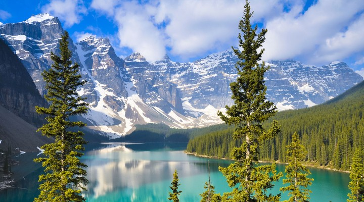

| Klimaat | Klimaattype | Continenten | Vegetatie | Dieren | |
|---|---|---|---|---|---|
 |
Gematigd landklimaat | Europa, Azië, Noord-Amerika en delen van Zuid-Amerika. | Loofbossen, gemengde bossen, taiga, graslanden en moerassen | Vergelijkbaar met het gematigd zee klimaat, zoogdieren, vogels, amfibieen en reptielen, kleine zoogdieren en ongewervelde dieren. |
Een gematigd landklimaat wordt gekenmerkt door een grote variatie in temperatuur gedurende het jaar, met warme zomers en koude winters.
Neerslag is over het algemeen gelijkmatig verdeeld, hoewel sommige gebieden drogere periodes kunnen ervaren.
Het landschap varieert van uitgestrekte bossen tot graslanden en heuvelachtige gebieden.
Dieren die in een gematigd landklimaat leven, zijn onder andere herten, beren, wolven, vogels en kleine zoogdieren.  |
| Informatie over gematigd landklimaat | |||||